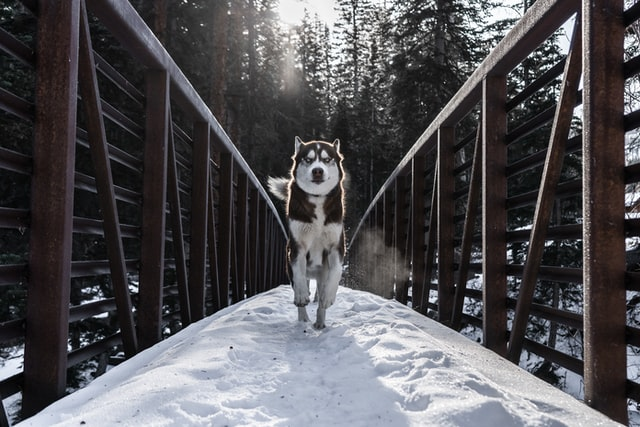
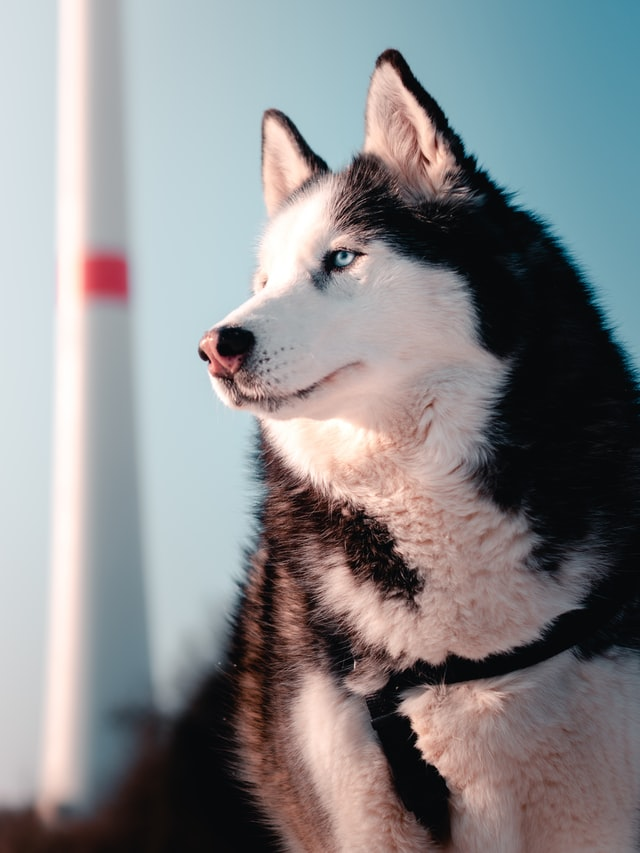
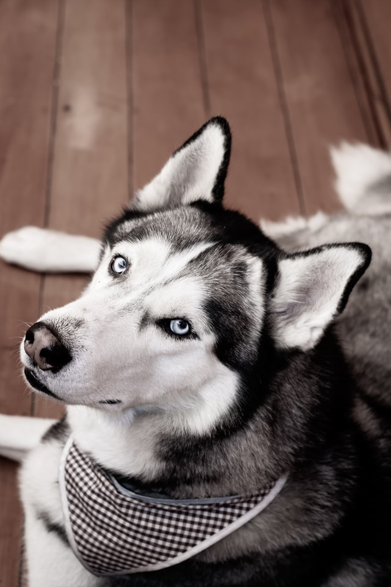
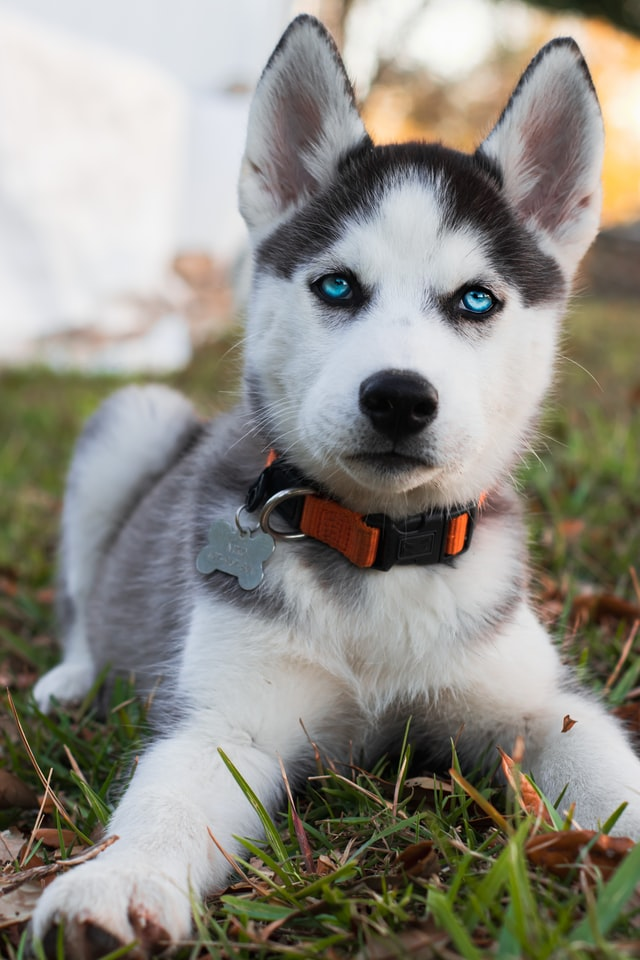

Husky

A fajtáról
A husky a világ egyik legismertebb szánhúzó kutyája. Ősi története van annak, hogyan tenyésztették ki a hűséges fajtát Szibériában és Alaszkában (ebből kifolyólag alaszkai husky és szibériai husky is létezik). Együtt húzta a szánt a szamojéd és az alaszkai malamuttal.
A legtöbb alkalommal szánhúzásra használják, de mentőkutyaként és vakvezetőként is számontartják.
A husky kirobbanóan energikus fajta. Hosszú sétákra, legalább napi kettőre van szüksége, különben könnyen csatazóna válhat otthonunkból.
Képek


